10 Grid management
10.0.1 NEMO grid
In this section, the main features of the NEMO grid and the implications in Ichthyop are summarized.
10.0.1.1 Horizontal
Computation domain
In the NEMO grid, the computation domain extends from the western edge of the western T cell (i=0) to the eastern edge of the eastern T cells (i=nx), and from the southern edge of the southern T cells (j=0) to the northern edge of the nothern T cells (j=ny).
Indexing
The horizontal layout of the NEMO grid is as follows:
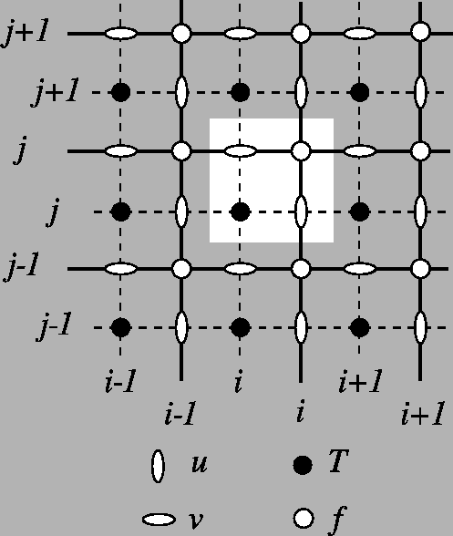
Tracer points (T points) are stored at the center of the cell. Zonal velocities (U points) are stored on the eastern face, while meridional velocities (V points) are stored on the northern face. U, V and T points have the same number of elements!
Scale factors
In NEMO, the zonal and meridional length of the cells are stored in the e1x and e2x variables, with x equals to t, u or v depending on the point considered.
Land-sea mask
For a particle at a given location, we determine whether it is on land as follows:
- We extract the
iindex of theTland-sea mask to use by computinground(x - 0.5). - We extract the
jindex of theTland-sea mask to use by computinground(y - 0.5). - We extract the mask value at the
(i, j)location.
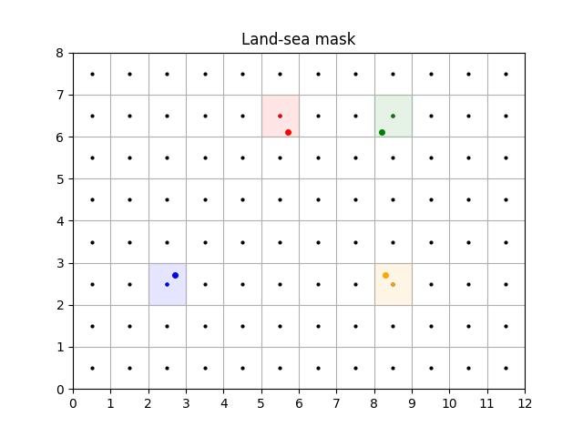
Close to coast
To determine whether a particle is close to coast, we extract the three neighbouring T cells. If one of them is land, then it assumed to be close to coast.
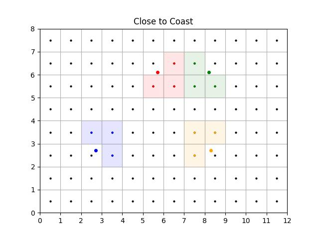
Is On Edge
The particle is considered to be out of the domain if the y value is greater than ny - 0.5 (no possible interpolation of T points) or less than 1 (no possible interpolation of V points).
If there is no zonal cyclicity, the particle is also considered to be out of the domain if the x value is greater than nx - 0.5 (no possible interpolation of T points) or less than 1 (no possible interpolation of U points).
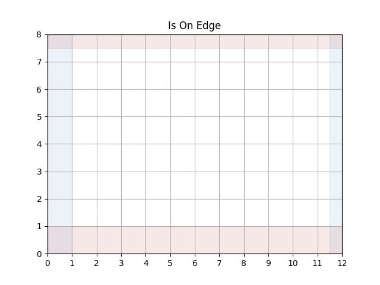
Zonal cyclicity
For regional simulations, there is no zonal cyclicty. On the other hand, for global NEMO simulations, which runs on the ORCA grid, the zonal cyclicity is as follows (indexes are provided for T points):
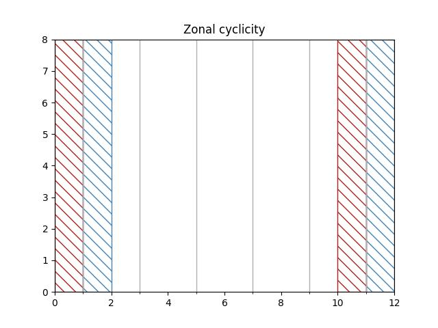
Therefore:
- if \(x \leq 1\), the particle is moved at \(N_x - 2 + x\)
- if \(x \geq nx - 1\), the particle is moved at \(x - N_x + 2)\)
Interpolation
Interpolation of T variables
Given a given position index of a particle with the T grid, the determination of the interpolation is done as follows:
- First, the
iindex of theTgrid column left of the particle is found. This is done by usingflooron thex - 0.5value. The removing of 0.5 is to convert thexvalue from the computational grid to theTgrid. - Then, the
jindex of theTgrid line below the particle is found. This is done by usingflooron they - 0.5value. The removing of 0.5 is to convert theyvalue from the computational grid to theTgrid. - The area to consider is defined by the
[i, i + 1]and[j, j + 1]squares.
An illustration is given below
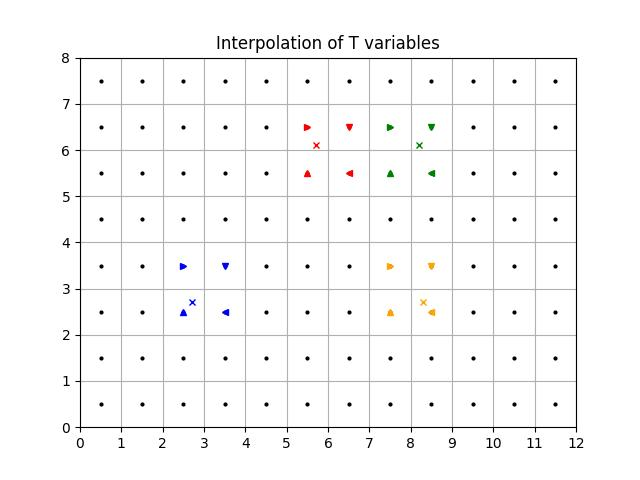
Interpolation of U variables
Interpolation of U variables is done as follows:
- First, the
iindex of theUpoint left of the particle is found by usingfloor(x - 1). The-1is to move from the computation grid to theUgrid system. - Then, the
jindex of theUgrid line below the particle is found. This is done by usingflooron they - 0.5value. The-0.5is to move from the computation grid to theUgrid system. - The box used to average the variable is therefore defined by the
[i, i + 1]and[j, j + 1]squares.
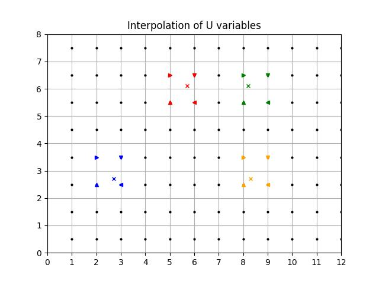
Interpolation of V variables
Interpolation of V variables is done as follows:
- First, the
iindex of theVpoint left of the particle is found by usingfloor(x - 0.5). The-0.5is to move from the computation grid to theUgrid system. - Then, the
jindex of theVgrid line below the particle is found. This is done by usingflooron they - 1value. The-1is to move from the computation grid to theUgrid system. - The box used to average the variable is therefore defined by the
[i, i + 1]and[j, j + 1]squares.
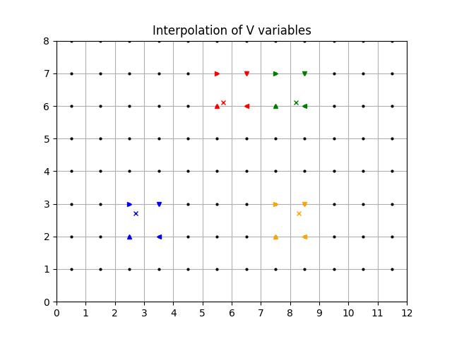
10.0.1.2 Vertical
Indexing
The original NEMO vertical indexing system is shown below:
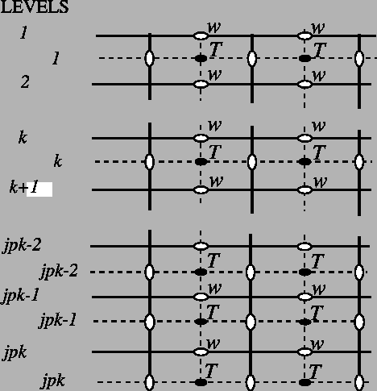
Index starts at 0 (at the surface) and ends at \(N_z - 1\) at depth. There are as many W levels as T levels. In NEMO, the T point situated at \(N_z - 1\) is always masked. W levels are located above the corresponding T points.
Therefore, in Ichthyop, only the first \(N_z - 1\) T points are read, while all the \(N_z\) W points are read. This is show below:
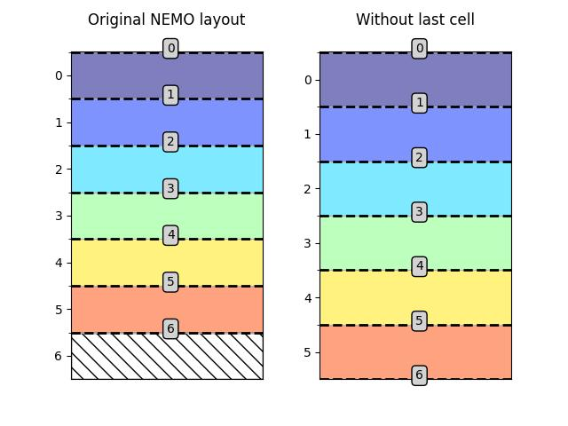
Vertical indexing system as used in Ichthyop. Red dashed lines represent the W levels (cell edges), whose index is given in the gray box.
There is now \(N_z\) W levels but \(N_z - 1\) T levels.
Furthermore, since in Ichthyop the first index corresponds to the seabed, the arrays are vertically flipped. Consequently, the final structure of the vertical grid is as follows:
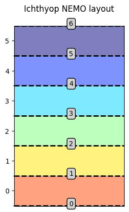
Corrected vertical indexing, with k=0 associated with the bottom depth.
Land-sea mask
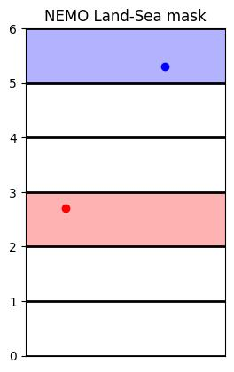
Vertical land-sea mask
Interpolation
T variables
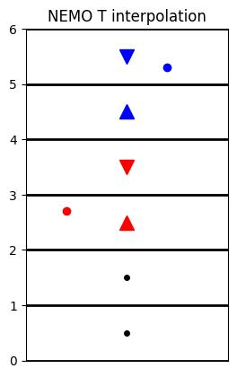
Vertical interpolation of T variables.
W variables
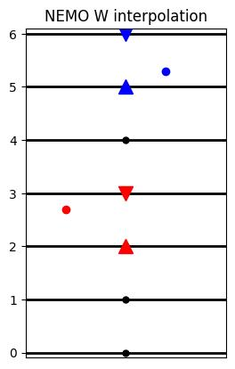
:align: center :width: 250 pxVertical interpolation of T variables.
10.0.2 ROMS grid
In this section, the main features of the ROMS grid and the implications in Ichthyop are summarized.
10.0.2.1 Horizontal
The horizontal grid layout of the ROMS model is shown below:
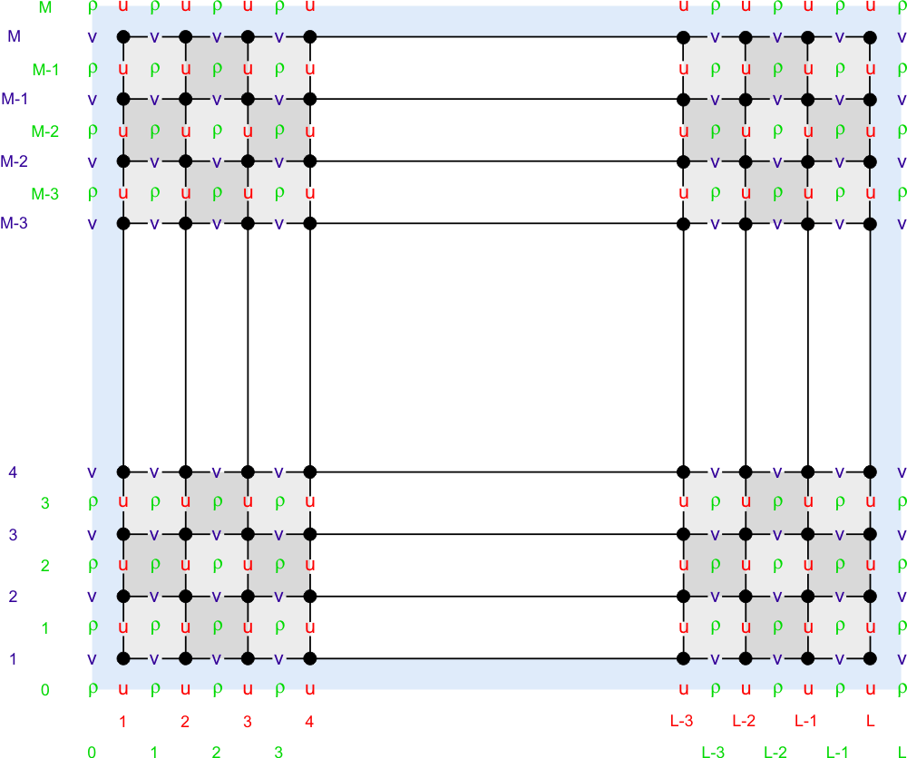
Contrary to NEMO and MARS, the U points are located on the western face, while velocities are located on the southern faces. However, However, as indicated on the Wikiroms page, while the T interior domain has \((N_y, N_x)\) dimensions, the U domain is \((N_y, N_x - 1)\) points while and V domain is \((N_y - 1, N_x)\) points. Indeed, the first row for V and the first column for U are discarded. Therefore, the structure of the input ROMS grid is as follows:
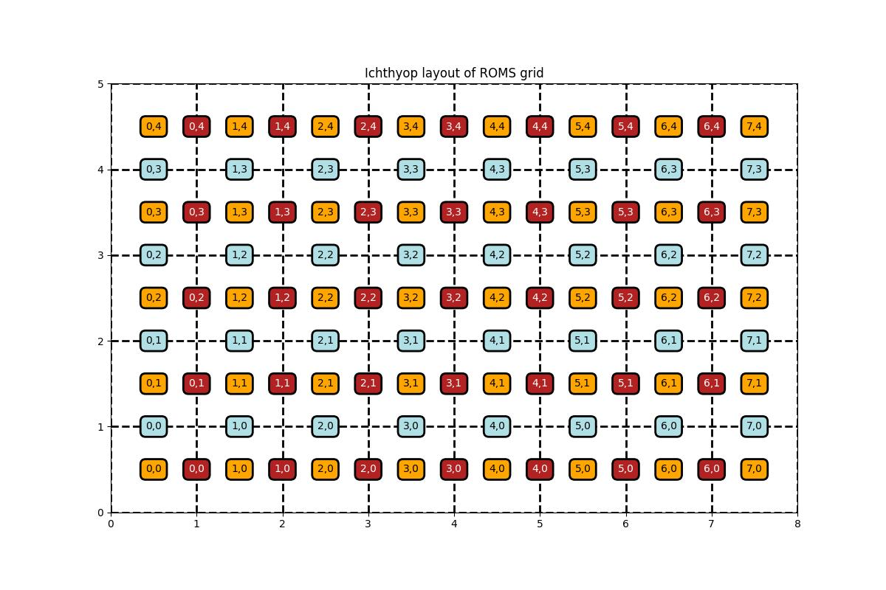
Land-sea mask
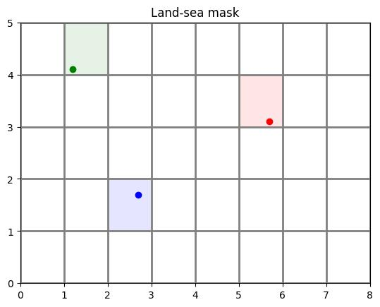
Interpolation
T interpolation
Given a given position index of a particle with the T grid, the determination of the interpolation is done as follows:
- First, the
iindex of theTgrid column left of the particle is found. This is done by usingflooron thex - 0.5value. The removing of 0.5 is to convert thexvalue from the computational grid to theTgrid. - Then, the
jindex of theTgrid line below the particle is found. This is done by usingflooron they - 0.5value. The removing of 0.5 is to convert theyvalue from the computational grid to theTgrid. - The area to consider is defined by the
[i, i + 1]and[j, j + 1]squares.
An illustration is given below
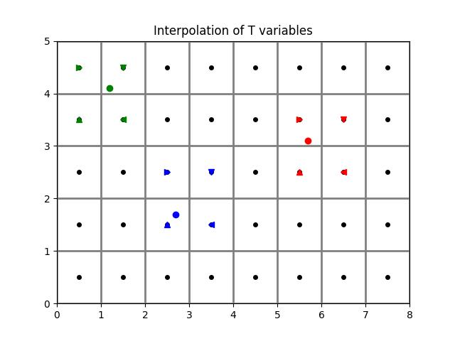
U interpolation
Interpolation of U variables is done as follows:
- First, the
iindex of theUpoint left of the particle is found by usingfloor(x - 1). The-1is to move from the computation grid to theUgrid system. - Then, the
jindex of theUgrid line below the particle is found. This is done by usingflooron they - 0.5value. The-0.5is to move from the computation grid to theUgrid system. - The box used to average the variable is therefore defined by the
[i, i + 1]and[j, j + 1]squares.
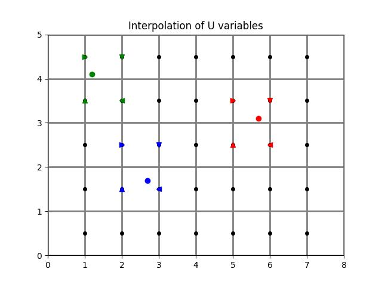
V interpolation
Interpolation of V variables is done as follows:
- First, the
iindex of theVpoint left of the particle is found by usingfloor(x - 0.5). The-0.5is to move from the computation grid to theUgrid system. - Then, the
jindex of theVgrid line below the particle is found. This is done by usingflooron they - 1value. The-1is to move from the computation grid to theUgrid system. - The box used to average the variable is therefore defined by the
[i, i + 1]and[j, j + 1]squares.
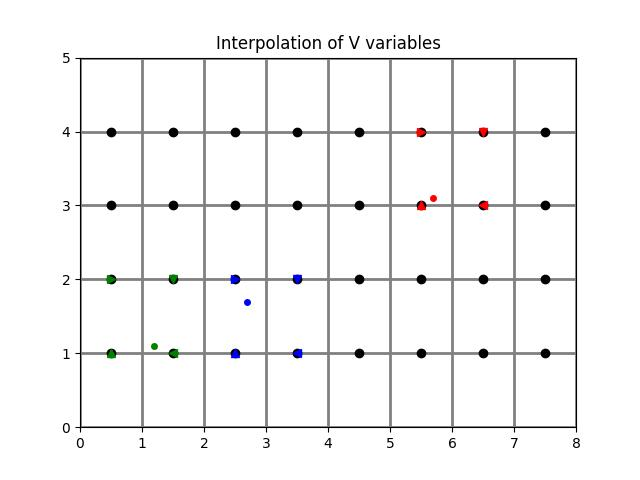
Is on edge
A particle is considered to be out of domain when \(x \leq 1\) (no possible interpolation of U on the western face), when \(y \geq N_x - 1\) (no possible interpolation of U on the eastern face), when \(y \leq 1\) (no possible interpolation of V on the southern domain) or when \(y \geq N_y - 1\) (no possible interpolation of V on the northern part of the domain).
The excluded domain is represented below:
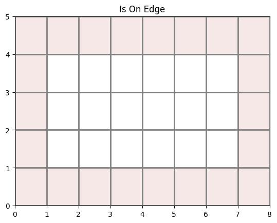
10.0.2.2 Vertical
Sigma coordinate
The vertical coordinate system of ROMS is discussed on WikiRoms and shown below.
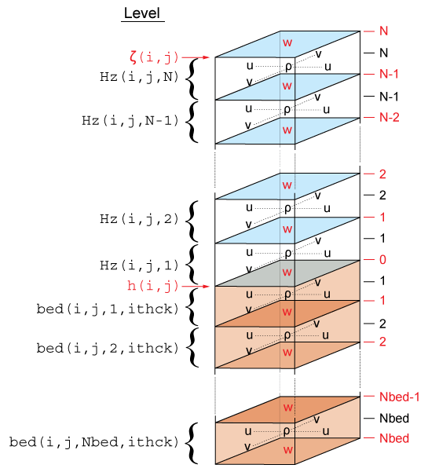
The vertical coordinate in ROMS is \(\sigma\), which varies between \(-1\) (ocean bottom) and \(0\) (ocean surface). There are two implementations of the \(\sigma\) to \(z\) conversion, both using sea-level anomalies (\(\zeta\)) and bathymetry (\(h\)).
The first one is available in ROMS since 1999 and is given by:
\[ z(x,y,\sigma,t) = S(x,y,\sigma) + \zeta(x,y,t) \left[1 + \dfrac{S(x,y,\sigma)}{h(x,y)}\right] \]
with
\[ S(x,y,\sigma) = h_c \, \sigma + \left[h(x,y) - h_c\right] \, C(\sigma) \]
and \(h_c\) and \(C(\sigma)\) parameters provided in the grid file.
The second transform, called UCLA-ROMS, is given by:
\[ z(x,y,\sigma,t) = \zeta(x,y,t) + \left[\zeta(x,y,t) + h(x,y)\right] \, S(x,y,\sigma) \]
with
\[ S(x,y,\sigma) = \dfrac{h_c \, \sigma + h(x,y)\, C(\sigma)}{h_c + h(x,y)} \]
and \(h_c\) and \(C(\sigma)\) parameters provided in the grid file.
It can be rewritten in the same form as the original one.
\[ z(x,y,\sigma,t) = h(x,y) S(x,y,\sigma) + \zeta(x,y,t) + \zeta(x,y,t) S(x,y,\sigma) \]
\[ z(x,y,\sigma,t) = h(x,y) S(x,y,\sigma) + \zeta(x,y,t) \left[1 + S(x,y,\sigma)\right] \]
\[ z(x,y,\sigma,t) = h(x,y) S(x,y,\sigma) + \zeta(x,y,t) \left[1 + \dfrac{h(x, y)S(x,y,\sigma)}{h(x, y)}\right] \]
In this form, both formulations can be expressed as:
\[ z(x,y,\sigma,t) = H_0(x, y, \sigma) + \zeta(x,y,t) \left[1 + \dfrac{H_0(x, y, \sigma)}{h(x, y)}\right] \]
with \(H_0\) which is constant overt time, and which varies between the classical and the UCLA formulations. For the classical formulation:
\[ H_0(x, y, \sigma) = S(x, y, \sigma) \]
For the UCLA formulation:
\[ H_0(x, y, \sigma) = h(x, y) S(x, y, \sigma) \]
10.0.3 MARS grid
In this section, the main features of the MARS grid and the implications in Ichthyop are summarized.
10.0.3.1 Horizontal
In MARS, the 3D structure of the grid is the same as the one in NEMO:
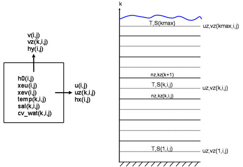
10.0.3.2 Vertical
The vertical coordinate of the Mars model is called \(\sigma\), which varies from -1 at seabed to 0 at the surface. In MARS, if the number of T points on the vertical is kmax, the number of W points is kmax + 1. For a given T cell located at the k index, the corresponding W point is located below. k=0 corresponds to the bottom, while k=kmax corresponds to the surface.
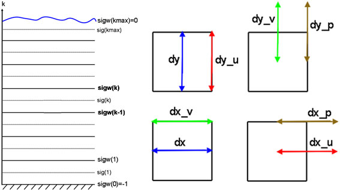
The conversion from \(\sigma\) to \(z\), using generalized \(\sigma\) levels, is given in Dumas (2009) (equation 1.29):
\[ z = \xi (1 + \sigma) + H_c \times [\sigma - C(\sigma)] + H C(\sigma) \]
where \(\xi\) is the free surface, \(H\) is the bottom depth and \(H_c\) is either the minimum depth or a shallow water depth above which we wish to have more resolution. \(C\) is defined as (equation 1.30):
\[ C(\sigma) = (1 - \beta) \dfrac{\sinh(\theta \sigma)}{\sinh(\theta)} + \beta \dfrac{\tanh[\theta(\sigma + \frac{1}{2})]-\tanh(\frac{\theta}{2})}{2 \tanh(\frac{\theta}{2})} \]
However, if the \(H_c\) variable is not found, the following formulation will be used:
\[ z = \xi (1 + \sigma) + \sigma H \]
Note that the \(C(\sigma)\) variable is read from the input file.